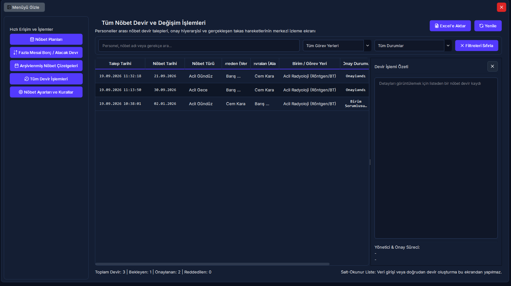
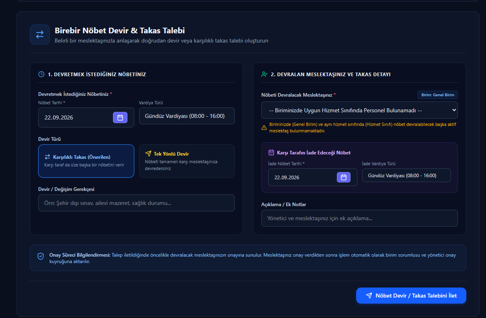
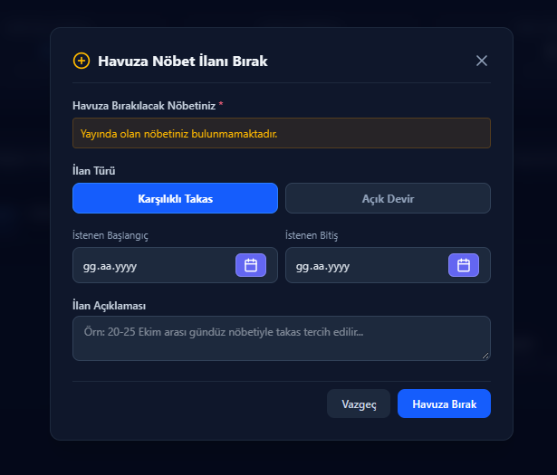
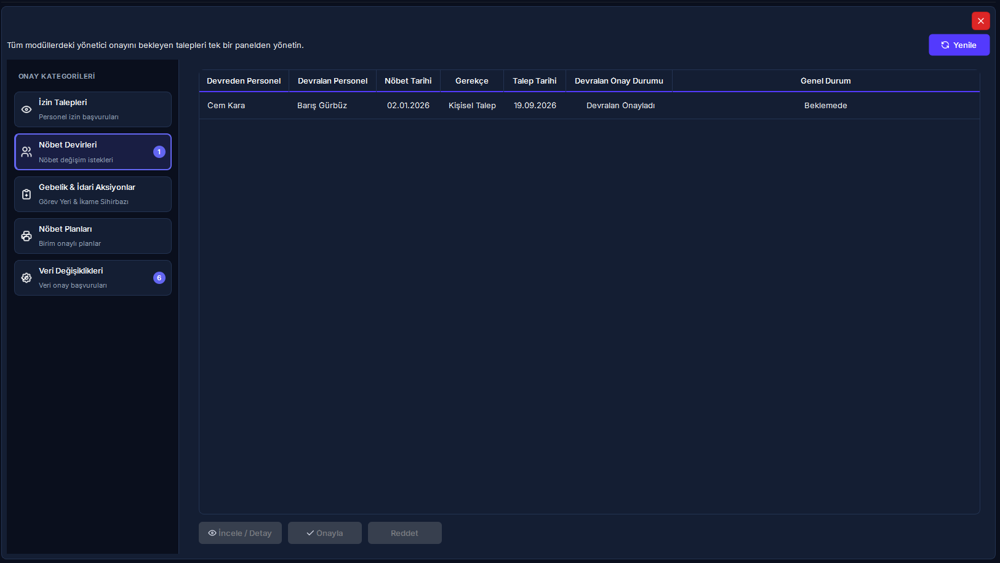

Nöbet Devir, İkame & Acil Mazeret Yönetimi
Personeller arası P2P nöbet devri ve karşılıklı takas akışı, çok kademeli onay zinciri, acil mazeretlerde akıllı ikame puanlayıcı, nöbet değişim pazaryeri (havuz), gebe personeli radyasyonsuz alana transfer eden 3 adımlı Yönetici Aksiyon Sihirbazı ve eğitim programı revizyon rehberi.
Hızlı Reçete: Ay Ortası Nöbet Değişimleri, İkame Önerisi ve Gebelik Transferi
P2P devir onayları, acil mazeret yönetimi, havuz kotası ve 3 adımlı yönetici aksiyonu
Kesinleşmiş nöbet çizelgelerindeki ay içi mazeret ve takasların mevzuata (NDK, hizmet sınıfı, dinlenme süresi) tam uyumlu, adil ve sahipsiz slot bırakmadan çözülmesi.
P2P devir için [Nöbet Devret] ile talep açın; ani krizlerde [Acil Mazeret] ile ikameleri hesaplayın; gebelikte [Yönetici Aksiyon Merkezi] sihirbazını uygulayın.
Gebe personele nöbet devri engellenir; taban saat karşılıksız devredilemez; 3 kademeli onay tamamlanınca çizelge güncellenir; hatalı mazeretler tek tıkla geri alınır.
🔍 5N1K Kural ve Arayüz Çözümleme Tablosu
Nöbet devri, takas, mazeret, havuz ve yönetici aksiyon merkezindeki kontrollerin işleyiş mantığı.
| NE? (Bileşen / İşlem) | NEDEN? (Amacı) | NASIL? (Çalışma Mantığı) | NE ZAMAN? | KİM? |
|---|---|---|---|---|
|
[Nöbet Devir Talebi] P2P Nöbet Devir & Takas Penceresi |
Personelin bir nöbetini meslektaşına devretmesini veya karşılıklı takas etmesini sağlamak. | Alan personel açılır menüden seçilir; sağlık kısıtı, gebelik ve hizmet sınıfı eşitliği denetlenir. Zorunlu gerekçe girilip talep kaydedilir. | Nöbete gelinemeyeceği anlaşıldığında. | Nöbetçi Personel |
|
[Tüm Devir İşlemleri Listesi] 7 Sütunlu Merkezi İzleme Tablosu |
Kurum genelindeki tüm devir/takas hareketlerini ve onay aşamalarını tek ekrandan izlemek. | Talep tarihi, nöbet günü, türü, devreden, devralan, birim ve tek sütunluk renkli durum rozetiyle salt-okunur listeler. Sağ panelde doğal dil özeti sunar. | Rutin denetim ve izlemede. | Birim Sorumlusu, Yönetici |
|
3 Aşamalı Onay Zinciri Alan Personel ➔ Birim Sorumlusu ➔ Yönetici |
İlgili personelin rızası ve amirlerin onayı olmadan çizelgenin bozulmasını engellemek. | Önce devralan meslektaş kabul eder; ardından birim sorumlusu klinik uygunluğu onaylar; son olarak yönetici onaylar. Yönetici acil hallerde tek tıkla bypass edebilir. | Talep açıldığında aşama aşama. | Meslektaş, Amir, Yönetici |
|
[Acil Mazeret] & Toplu İkame Akıllı İkame Öneri Algoritması |
Ani hastalık veya kaza durumunda nöbetlerin açıkta kalmasını engellemek. | Personel ve tarih aralığı seçilip [Hesapla] denir. Sistem boş kalan her slot için dinlenme süresi dolmuş ve hedef saat açığı olan meslektaşları puanlayıp ikame önerir. | Beklenmeyen kriz hallerinde. | Birim Sorumlusu, Yönetici |
|
[Geri Al] (Mazeret İptali) Mazeret ve İkame Kaydını Geri Döndürme |
Hatalı girilen mazeretlerde çizelgeyi eski haline getirmek. | Geçmiş sekmesinden ilgili mazeret seçilip [Geri Al] butonuna basılır. Sistem ikame atamalarını siler ve mazeretli personelin nöbetlerini geri yükler. | Hatalı mazeret girişlerinde. | Yönetici (Sudo Parolalı) |
|
[Ders Programı Revizyonu] Eğitim Kısıtı Güncelleme Diyalogu |
Üniversite ders günleri dönem ortasında değişen personeli güncellemek. | Revizyon tarihi seçilir; eski talep dondurulur; yeni haftalık ders günleri (Pazartesi .. Pazar) işaretlenerek yeni kısıt kaydı oluşturulur. | Dönem içi ders programı değiştiğinde. | Personel, Birim Sorumlusu |
|
[Yönetici Aksiyon Merkezi] 3 Adımlı Gebe Personel Yönetim Sihirbazı |
Gebe personelin haklarını korurken klinik nöbet ve mesai açıklarını tek ekrandan çözmek. | 1. Adım: Radyasyonsuz birime transfer ➔ 2. Adım: Eski birimdeki boş nöbetlere ikame ataması ➔ 3. Adım: Yeni birimde eksik saatler için gündüz vardiyaları oluşturma. | Gebelik doktor raporu çıktığında. | Başhekimlik, İdari Yönetici |
|
Nöbet Değişim Havuzu & 36s TTL Web Portal Marketplace & Zaman Aşımı |
Muhatap aramadan nöbet değişimini pazaryerine sunmak; son 36 saatte idari süreci başlatmak. | Personel nöbetini havuza bırakır (maks 48s/ay); meslektaşlar teklif verir. Nöbete 36 saat kala havuz ilanı zaman aşımına uğrar; personelin talebi ve yöneticinin tespitiyle acil mazerete aktarılır. | Nöbet takası arayışında. | Personel, İdari Yönetici |
Saha Mit Avcısı: "Havuzda 36 Saat Kala Eşleşmeyen Nöbetler Otomatik Olarak Acil Mazerete mi Aktarılır?"
En Sık Karşılaşılan Havuz ve Mazeret YanılgısıYanlış İnanış: "Nöbetimi değişim havuzuna bıraktım; nöbete 36 saat kala kimse talip olmazsa sistem otomatik olarak mazeret izni açar, beni nöbetten siler ve yerime zorunlu ikame yazar."
Doğru Gerçek: HAYIR, BU SÜREÇ OTOMATİK İŞLEMEZ. Nöbet saatine 36 saat kaldığında sistem nöbetin sahipsiz kalmasını önlemek için ilanı zaman aşımına (ZAMAN_ASIMI) uğratır ve havuzdan çeker. Ancak acil mazeret ve ikame atama süreci kendiliğinden devreye girmez. Personelin birim yöneticisine yazılı/sözlü başvuruda bulunması ve yöneticinin klinik bir zorunluluk olduğunu tespit etmesi neticesinde yönetici inisiyatifiyle acil mazeret ve ikame protokolü başlatılır.
🔄 Devir, İkame, Mazeret ve Aksiyon Akış Şeması
P2P devir talebinden 3 kademeli onaya, acil mazeretten gebe personel sihirbazına kadar tüm karar döngüsü.
graph TD
A(["Ay İçi Nöbet Değişim İhtiyacı"]) --> B{"Talep Türü Nedir?"}
%% P2P Devir / Takas Akışı
B -->|"Birebir Devir / Takas"| C["Nöbet Devir Formu Açılır"]
C --> D{"Alan Personel Uygun mu? - NDK/Hizmet Sınıfı/Fazla Mesai"}
D -->|"Gebe / Kısıtlı / Farklı Hizmet Sınıfı"| E["ENGEL: İşlem Reddedilir"]
D -->|Uygun| F["Talep Gönderilir - Aşama: alan_personel"]
F --> G{"Devralan Meslektaş Kabul Etti mi?"}
G -->|Hayır| H["Talep Reddedildi - Süreç Biter"]
G -->|Evet| I["Aşama: birim_sorumlusu"]
I --> J{"Birim Amiri Uygun Buldu mu?"}
J -->|Hayır| H
J -->|Evet| K["Aşama: hizmet_sorumlusu"]
K --> L{"İdari Yönetici Onayladı mı?"}
L -->|Hayır| H
L -->|"Evet: Admin Bypass Destekli"| M["Nöbet Çizelgesi Güncellenir - Süreç Tamamlandı"]
%% Acil Mazeret Akışı
B -->|"Ani Hastalık / Kaza / Refakat"| N["Acil Mazeret Dialogu Açılır"]
N --> O["Tarih Aralığı Girilir ve Hesapla Butonuna Basılır"]
O --> P["Sistem Dinlenme & Saat Kriterine Göre İkameleri Puanlar"]
P --> Q["Yönetici İkameleri Doğrular ve Kaydet Der"]
Q --> R["Orijinal Nöbetler Düşürülür, İkameler Yazılır"]
R --> S{"Hatalı İşlem mi Yapıldı?"}
S -->|Evet| T["Geri Al Butonu ile İkameler Silinir, Orijinal Nöbetler Döner"]
S -->|Hayır| U(["Mazeret & İkame Yayında"])
%% Gebelik Bildirimi & Yönetici Aksiyon Merkezi
B -->|"Gebelik Doktor Raporu"| V["Gebelik Bildirimi Belgesi Girilir"]
V --> W["Gece Nöbetleri ve Radyasyon İzinleri Derhal Kapatılır"]
W --> X["Yönetici Aksiyon Merkezi 3 Adımlı Sihirbazı Açılır"]
X --> Y["1. Adım: Radyasyonsuz Birime Görevlendirme"]
Y --> Z["2. Adım: Eski Birimdeki Boş Nöbetlere İkame Atama"]
Z --> AA["3. Adım: Yeni Birimde Eksik Saatler İçin Gündüz Vardiyaları"]
AA --> AB(["Toplu Aksiyon Onaylanır - Çizelgeler Dengelenir"])
style A fill:#06b6d4,stroke:#0891b2,stroke-width:2px,color:#fff
style E fill:#ef4444,stroke:#dc2626,stroke-width:2px,color:#fff
style M fill:#10b981,stroke:#059669,stroke-width:2px,color:#fff
style N fill:#f59e0b,stroke:#d97706,stroke-width:2px,color:#fff
style T fill:#8b5cf6,stroke:#7c3aed,stroke-width:2px,color:#fff
style V fill:#ec4899,stroke:#db2777,stroke-width:2px,color:#fff
style AB fill:#059669,stroke:#047857,stroke-width:2px,color:#fff
🖼️ Arayüz Ekran Görünümleri
Nöbet devir listesi, devir talep formu, pazar yeri havuzu ve yönetici aksiyon merkezi ekranları.




📋 Adım Adım İşlem Rehberi
Nöbet devri, takas, mazeret, havuz ve idari transfer senaryolarında izlenecek uygulama adımları.
Personeller Arası P2P Nöbet Devir Talebi Oluşturma
- Nöbet çizelgesi ekranında devretmek istediğiniz nöbet hücresine sağ tıklayıp [Nöbet Devret] seçeneğini seçin (veya Web Portal Nöbetlerim ekranından *'Devret'* butonuna basın).
- Açılan pencerede kaynak nöbet bilgileri (personel, tarih, vardiya türü) otomatik gösterilir.
- [Alan Personel] açılır kutusundan nöbeti devralacak meslektaşınızı seçin:
- Sistem farklı hizmet sınıfındaki personelleri (örn: Hemşire - Teknisyen) otomatik filtreler.
- Gebe, emziren veya sağlık raporu olan personeller listeye dahil edilmez.
- [Devir Nedeni] kutusuna resmi gerekçenizi yazın.
- [Kaydet] butonuna tıklayın. Talep önce devralacak meslektaşın onayına iletilir.
Çok Kademeli Onay Sürecini Yürütme ve Tamamlama
- 1. Aşama (Alan Personel): Devralacak meslektaş Bildirim Merkezi veya Web Portal üzerinden gelen devir talebini inceler ve [Kabul Et] butonuna basar.
- 2. Aşama (Birim Sorumlusu): Birim amiri servisin o günkü işleyişini ve vardiya dengesini inceleyerek talebi birim düzeyinde onaylar.
- 3. Aşama (Yönetici Onayı): İdari yönetici talebi onaylar. Üç onay tamamlandığı anda nöbet çizelgesinde personelin adı değişir, saatler yeniden hesaplanır ve her iki tarafa bildirim gider.
- (Acil Hallerde: Sistem Yöneticisi doğrudan tek tıkla nihai onayı vererek alt aşamaları tamamlayabilir.)
Acil Mazeret Bildirimi ve Toplu Akıllı İkame Atama
- Nöbet çizelgesi ekranındayken üst araç çubuğundaki [Acil Mazeret] butonuna tıklayın.
- Açılan pencerede [Personel] seçimini yapın ve mazeret kapsamındaki [Başlangıç Tarihi] ile [Bitiş Tarihi] alanlarını girin.
- [İptal Nedeni] kutusundan resmi izin türünü (veya *'Diğer / Gayri-Resmi Mazeret'* seçeneğini) belirleyin.
- [Etkilenen Nöbetleri Getir / Hesapla] butonuna basın.
- Sistem personelin o tarihlerdeki tüm nöbetlerini listeler; her nöbetin karşısına kural ihlali yapmayan ve en yüksek uygunluk puanına sahip yedek personelleri otomatik önerir.
- İkame personelleri onaylayıp [Kaydet] butonuna basarak işlemi tamamlayın.
Hatalı Mazeretleri Tek Tıkla Geri Alma (Rollback)
- [Acil Mazeret] penceresinde [Geçmiş] sekmesine geçin.
- Daha önce kaydedilmiş mazeret logları listesinden geri alınacak satırı seçin.
- Alttaki [Geri Al] butonuna tıklayın.
- Ekrana gelen onay kutusunu teyit edin. Sistem atanan ikame nöbetleri siler ve mazeretli personelin nöbetlerini sıfır veri kaybıyla eski haline döndürür.
Gebe Personel Bildirimi ve Yönetici Aksiyon Sihirbazı
- Personel özlük kartı detayındayken [Gebelik Bildirimi] butonuna tıklayın.
- Bildirim tarihi, tahmini doğum tarihi ve doktor raporu dosyasını sisteme kaydedin.
- Sistem gece nöbeti ve radyasyon kilitlerini anında kapatır; [Yönetici Aksiyon Merkezi] sihirbazı açılır:
- 1. Adım: Personelin atanacağı radyasyonsuz yeni birimi seçin.
- 2. Adım: Gebe personelin eski biriminde düşen nöbetlerine listeden ikame personelleri atayın.
- 3. Adım: Personelin yeni birimde eksik kalan aylık çalışma saatini tamamlamak için önerilen gündüz vardiyalarını onaylayın.
- [Tüm Aksiyonları Onayla ve Çizelgeyi Güncelle] butonuna basarak işlemi tek adımda tamamlayın.
❓ Sıkça Sorulan Sorular (SSS)
Nöbet devri, takas, mazeret ve havuz yönetimi hakkında en çok merak edilen sorular.
Gebe veya emziren personele nöbet devredilebilir mi?
Kesinlikle hayır. RADPYS Güvenlik Kalkanı (`RED-NOBET_RADIATION_PREGNANCY_BREACH_IN_SWAP`) uyarınca aktif gebelik bildirimi, emzirme izni, heyet raporu veya radyasyon doz aşımı bulunan personele sistem hiçbir koşulda nöbet devrine veya takasına izin vermez. Devir formu bu personelleri seçim listesine dahil etmez.
Radyoloji Teknikeri ile Hemşire arasında nöbet devri veya takası yapılabilir mi?
Hayır. Hizmet Sınıfı Eşitliği ilkesi gereğince nöbet devri ve takası yalnızca aynı hizmet sınıfındaki meslektaşlar arasında yapılabilir. Farklı unvanlara sahip personeller (örn: Hemşire ile Radyasyon Teknikeri) birbirinin nöbetini devralamaz.
Bir personel aylık zorunlu taban çalışma saatini tek yönlü olarak başkasına devredebilir mi?
Hayır. Personelin aylık zorunlu çalışma süresi (örneğin 140 saat) altındaki taban nöbetleri karşılıksız devredilemez. Yalnızca fazla mesai kapsamındaki nöbetler tek yönlü devredilebilir. Personel taban süresini doldurmamışsa mutlaka "Karşılıklı Takas" seçeneğini kullanmak zorundadır.
Nöbet değişim havuzunda 36 saat kala nöbet otomatik olarak acil mazerete mi düşer?
Hayır. Nöbet saatine 36 saat kaldığında sistem nöbetin açıkta kalmasını önlemek için havuz ilanını zaman aşımına uğratır (`ZAMAN_ASIMI`). Ancak acil mazeret ve ikame atama süreci otomatik olarak işletilmez. Personelin yöneticiye başvurusu ve amirin klinik bir zorunluluk olduğunu teyit etmesi neticesinde yönetici inisiyatifiyle acil mazeret protokolü devreye alınır.
Acil mazeretle iptal edilen nöbetler sonradan geri alınabilir mi?
Evet. Acil mazeret diyalogundaki **[Geçmiş]** sekmesine gidilerek ilgili mazeret kaydı seçilip **[Geri Al]** butonuna basıldığında, sistem atanan ikame nöbetleri siler ve mazeretli personelin orijinal nöbetlerini çizelgeye geri döndürür.